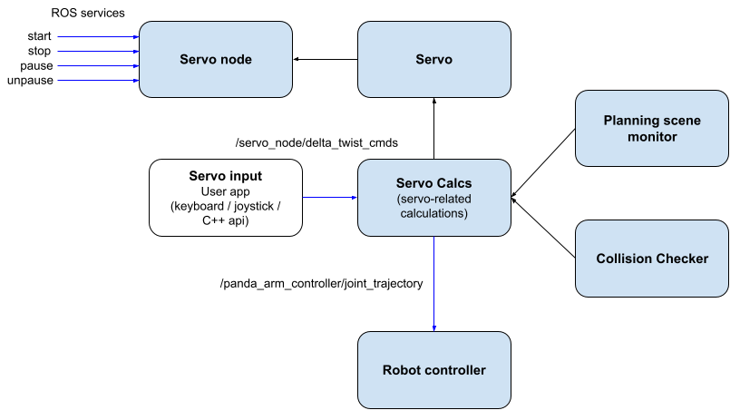

layout: true <div class="header"><img src="https://rosin-project.eu/wp-content/uploads/rosin_ack_logo_wide.png" style="background-color:transparent"/></div> <div class="footer"><img src="https://www.ipa.fraunhofer.de/content/dam/ipa/ipa.svg" /><p>© Fraunhofer IPA</p></div> <div class="triangle"></div> --- # MOVEIT Servo ## The motion planning framework --- ## MoveIt Servo - Send end effector velocity commands directly to the robot - Enables teleoperation via a wide range of input schemes - keyboards, joysticks - Or for other autonomous software to control the robot using C++ api - in visual servoing or closed loop position control for instance. - Can be used alongside MoveIt's planning and execution framework <iframe width="560" height="315" style="display: block; margin: auto;" src="https://www.youtube.com/embed/MF-_XKpGefY" title="YouTube video player" frameborder="0" allow="accelerometer; autoplay; clipboard-write; encrypted-media; gyroscope; picture-in-picture; web-share" allowfullscreen></iframe> --- ## Architecture <div> <center>  </center> </div> --- ## Usage Start the servo node and the moveit configuration package ```bash ros2 launch moveit_servo servo_example.launch.py ``` Make a service request to start Servo ```bash ros2 service call /servo_node/start_servo std_srvs/srv/Trigger {} ``` Start keyboard input node to send velocity commands ```bash ros2 run moveit2_tutorials servo_keyboard_input ``` --- # Thank you! ### Main maintainers: PickNik Robotics picknik.ai Boulder, Colorado 80302 @picknikrobotics